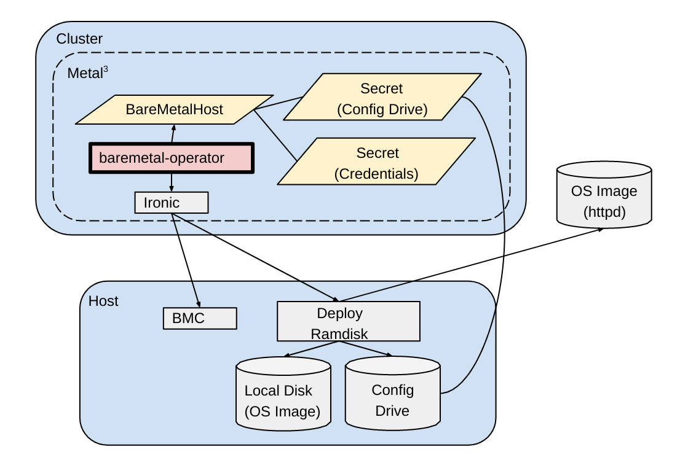

# BareMetalOperator ### Kubernetes Native Bare Metal Management ( Metal3 Project ) # Introduction The Bare Metal Operator or BMO implements a Kubernetes API for managing bare metal hosts. It maintains an inventory of available hosts as instances of the BareMetalHost Custom Resource Definition. The Bare Metal Operator knows how to: * Inspect the host’s hardware details such as CPUs, RAM, disks, NICs, etc. and report them on the corresponding BareMetalHost * Provision hosts with a desired image and clean a host’s disk contents before or after provisioning <br> Bare Metal Operator abstracts hardware ( at present physical nodes ) and provides them as consumables to the Kubernetes [Cluster API](https://github.com/kubernetes-sigs/cluster-api) via **Metal3’s** [Cluster API Provider Metal3](https://github.com/metal3-io/cluster-api-provider-metal3) which extends the Cluster API as the provider which handles real hardware. <br> <br> See this [BMO state diagram](https://github.com/metal3-io/baremetal-operator/blob/master/docs/baremetalhost-states.md) describing various states part of BMO’s lifecycle, the different states are briefly described below the diagram in this document. <br> <br> BMO is integral to the Metal3 project and provides a very useful functionality of using real hardware for Kubernetes deployment. But it is also useful for standalone use cases and we will discuss that later in the presentation. Below is a diagram depicting BMO part of a Metal3 environment ### Representation of BMO in Metal3 environment  ### BMO with Metal3 * The **baremetal-operator** is the component that manages bare metal hosts. It exposes a new BareMetalHost custom resource in the Kubernetes API that lets you manage hosts in a declarative way. <br /> <br /> <br /> <br /> <br /> * **cluster-api-provider-metal3** is the component that provides integration with the cluster-api project. This provider includes a Metal3Machine object that acts as a client of the BareMetalHost custom resources (CR). # API The BareMetalHost embeds two well differentiated sections, the bare metal host specification and its current status. <br> <br> These two sections being : * BareMetalHost spec * BareMetalHost status There are many fields under both these sections, we shall look at few of the key fields among them. <br> <br> First let’s look at a sample BareMetalHost CRD ( Custom Resource Definition ), defining a simple host definition and containing a part of all the available fields. <br> <br> Then we will take a look at sections of a BareMetalHost Object after its creation like Spec, Status, etc. <br> <br> For further details about the BMO API, refer the [documentation here](https://github.com/metal3-io/baremetal-operator/blob/master/docs/api.md). ### Sample BareMetalHost Definition ``` apiVersion: v1 kind: Secret metadata: name: bmo-master-0-bmc-secret type: Opaque data: username: YWRtaW4= password: cGFzc3dvcmQ= ---- apiVersion: metal3.io/v1alpha1 kind: BareMetalHost metadata: name: bm0 spec: online: true bmc: address: idrac://192.168.122.1:6230/ credentialsName: bm0-bmc-secret disableCertificateVerification: true ``` The host credentials are base64 encoded, for example in the secret before : ``` $echo -n 'admin' | base64 YWRtaW4= $echo -n 'password' | base64 cGFzc3dvcmQ= ``` ### BareMetalHost Spec * __bmc__ : contains the connection information for the BMC (Baseboard Management Controller) on the host, its subfields are : * __address__ : The URL for communicating with the BMC controller, based on the provider being used. * __credentialsName__ : A reference to a secret containing the username and password for the BMC. * __disableCertificateVerification__ : A boolean to skip certificate validation when true. * __bootMACAddress__ : address of the NIC used to PXE boot the system for provisioning For more details check [here](https://github.com/metal3-io/baremetal-operator/blob/master/docs/api.md#bmc) ### BareMetalHost Status **BareMetalHost status** : It shows the details of the host like CPU, storage, NICs, etc. This [BareMetalHost Example](https://github.com/metal3-io/baremetal-operator/blob/master/docs/api.md#baremetalhost-example) shows Spec, Status and other details of a node added as BMH. <br> <br> **Hardware** : It shows the system details like CPU, NICs, Storage, etc. <br> <br> **Provisioning** : It shows the current provisioning state as well as the image that was provisioned along with rootDeviceHints - the root device instructions used for the most recent provisioning <br> <br> For more details refer the [details here](https://github.com/metal3-io/baremetal-operator/blob/master/docs/api.md#baremetalhost-status). There are a few more features in the API such as : * __Triggering Provisioning__ : For this we have to set a valid spec.image.url, online=true and the host must have all the BMC details. Remove the url field to Deprovision the BMH. * __Unmanaged Hosts__ : These are hosts without BMC details and stay in the unmanaged state. They cannot be provisioned, not can we change their power state with the API. * __Pausing reconciliation__ : You can use set the annotation baremetalhost.metal3.io/paused to anything other than metal3.io/capm3, and remove it to continue the reconciliation. * __Status annotation__ : BMH’s Status sub-resource contain a handful of critical data regarding the BMH's state. This is especially important when pivoting BMO from management cluster to the target cluster ( in case of Metal3 ). With this annotation we can reconstruct the status of BMO even when its empty and thus restore the same state as before without accidentally triggering another introspection or provisioning. Refer this link for details # Configuration Parameters The operator supports several configuration options for controlling its interaction with Ironic. <br> <br> DEPLOY_RAMDISK_URL -- The URL for the image containing the Ironic agent. <br> <br> DEPLOY_KERNEL_URL -- The URL for the kernel to go with the deploy ramdisk. <br> <br> IRONIC_ENDPOINT -- The URL for the operator to use when talking to Ironic. <br> <br> IRONIC_INSPECTOR_ENDPOINT -- The URL for the operator to use when talking to Ironic Inspector.. <br> <br> IRONIC_CACERT_FILE -- The path of the CA certificate file of Ironic, if needed. <br> <br> IRONIC_INSECURE -- ("True", "False") Whether to skip the ironic certificate validation. It is highly recommend to not set it to True.. <br> <br> BMO_CONCURRENCY -- The number of concurrent reconciles performed by the Operator. Default is 3. # Developing and Deployments It is possible to deploy baremetal-operator with three different operator configurations, namely: * operator with ironic * operator without ironic * ironic without operator <br> For more details regarding the supported deployments and some examples see this [deployment-doc.](https://github.com/metal3-io/baremetal-operator/blob/master/docs/deploying.md) <br> If you wish to try changes or features, here are the steps to [setup BMO Developer Environment.](https://github.com/metal3-io/baremetal-operator/blob/master/docs/dev-setup.md) <br> For testing BMO deployments, follow the steps described in the [testing doc.](https://github.com/metal3-io/baremetal-operator/blob/master/docs/testing.md) <br> To your own custom images for your use-case, follow the steps in this [image publishing doc.](https://github.com/metal3-io/baremetal-operator/blob/master/docs/publishing-images.md) <br> The BMO is designed with a modular API which can ideally talk with any agent in the backend. But since Ironic has emerged as the (only?) choice for now, we will discuss about that # Ironic Integration Refer [here](https://github.com/metal3-io/metal3-docs/blob/master/design/baremetal-operator/how-ironic-works.md) if you want to see how Ironic works ### Authenticating to Ironic We might need to contact the Ironic and Ironic Inspector APIs during inspection and provisioning, so its advisable to require authentication on these APIs since workloads running on the provisioned host might have access to provisioning network. <br> <br> Authentication configuration is read from the filesystem, beginning at the root directory specified in the environment variable METAL3_AUTH_ROOT_DIR. If this variable is empty or not specified, the default is /opt/metal3/auth. <br> <br> The baremetal-operator supports connecting to Ironic and Ironic Inspector configured with the following auth_strategy modes: * noauth (no authentication) * http_basic (HTTP [Basic access authentication](https://en.wikipedia.org/wiki/Basic_access_authentication)) <br> <br> Refer [this document](https://github.com/metal3-io/baremetal-operator/blob/master/docs/ironic-authentication.md) for more details. ### Ironic Endpoint Keepalived configuration The motivation behind maintaining Ironic Endpoint with Keepalived is to ensure that the Ironic Endpoint IP is also passed onto the target cluster control plane. This also guarantees that once pivoting is done and the management cluster is taken down, target cluster controlplane can re-claim the ironic endpoint IP through keepalived. The end goal is to make ironic endpoint reachable in the target cluster. <br> <br> ```kustomize build $BMOPATH/ironic-deployment/keepalived | kubectl apply -f-``` <br> <br> For more details refer [this documentation](https://github.com/metal3-io/baremetal-operator/blob/master/docs/ironic-endpoint-keepalived-configuration.md). # Roadmap ### Power cycling, deleting failed nodes It is not always practical to require admin intervention once a node has been identified as having reached a bad or unknown state. In order to automate the recovery of exclusive workloads (eg. RWO volumes and StatefulSets), we need a way to put failed nodes into a safe state, indicate to the scheduler that affected workloads can be started elsewhere, and then attempt to recover capacity. <br> <br> **Goals** * A declarative API to perform inspection * Use this API for future Metal³ remediation controller ### Bios config ( Ongoing ) [This document](https://github.com/metal3-io/metal3-docs/blob/master/design/baremetal-operator/bios-config.md) explains the usage of YAML attributes for BIOS configuration for the BareMetalHost of the BMO. These configurations will be applied to the host according to the vendor's BMC driver being used by Ironic. <br> <br> It is implemented under the **firmware** attribute and you can check the current [api documentation here](https://github.com/metal3-io/metal3-docs/blob/master/design/baremetal-operator/bios-config.md). ### RAID API ( Ongoing ) While it is reasonable to assume that cloud instances and VMs only need one drive with minimal configuration, many classes of server hardware need to have RAID storage configured to present fast and reliable storage to the OS. While it is possible today to pre-configure the hosts, it would be more convenient for users if metal3 could do that work for them. <br> <br> *Goals* * Provide an API to specify the RAID storage configuration to use when provisioning a host. * Outline the controller/provisioner logic changes needed to pass the instructions to Ironic to have the storage configured. * Support basic RAID levels 0, 1, and 1+0. <br> <br> To look at more details refer this [design document](https://github.com/metal3-io/metal3-docs/blob/master/design/baremetal-operator/raid-api.md), and refer [this api documentation](https://github.com/metal3-io/baremetal-operator/blob/master/docs/api.md#raid) for current support. ### Re-Inspection Interface We would like to have an interface to allow a user to re-gather hardware inventory of a Ready BareMetalHost when a hardware replacement is made. When a user of the underlying infrastructure makes some changes to the actual server (e.g. replace or add NIC, disk, etc.), the latest hardware inventory including those changes need to be re-collected and updated on the spec of the corresponding BareMetalHost object without having to delete it. <br> <br> Implementation of this proposal is based on using annotation (similar to [Reboot API](https://github.com/metal3-io/metal3-docs/blob/master/design/baremetal-operator/reboot-interface.md)) to request inspection of a Ready BareMetalHost. Once the annotation is set on BareMetalHost, the baremetal operator will request hardware inspection of the host from Ironic. ### Worker Config Drive Provisioning hosts requires two separate images. The first is the primary target image for the host, and contains the operating system and other software that the host will run. These are generally reusable across many hosts. The second image is the "config drive image", which contains configuration settings passed to the target image by writing an ISO to a separate partition accessible when the host boots. The config drive image is often customized for each host. It is always often customized for the role a host plays (master, worker, etc.). <br> <br> **Goals** * Avoid having the baremetal operator tightly coupled to provisioning hosts to become nodes in the cluster. * Avoid leaking secrets when passing the config drive to the baremetal operator. ### Resources #### [Metal3 Website](https://metal3.io) #### [Metal3 GitHub Project Page](https://github.com/metal3-io) #### [BMO Github Page](https://github.com/metal3-io/baremetal-operator) #### [Cluster API GitHub](https://github.com/kubernetes-sigs/cluster-api) #### [Ironic Documentation](https://wiki.openstack.org/wiki/Ironic) ### Community #### [Twitter](https://twitter.com/metal3_io) #### [Mailing List](https://groups.google.com/forum/#!forum/metal3-dev) #### Join [#cluster-api-baremetal](https://kubernetes.slack.com/messages/CHD49TLE7) channel on Kunernetes Slack #### [Community Meeting Notes](https://docs.google.com/document/d/1d7jqIgmKHvOdcEmE2v72WDZo9kz7WwhuslDOili25Ls/edit) #### [Community Meeting](https://zoom.us/j/97255696401?pwd=ZlJMckNFLzdxMDNZN2xvTW5oa2lCZz09) #### [Metal3 Documentation](https://metal3.io/documentation.html)